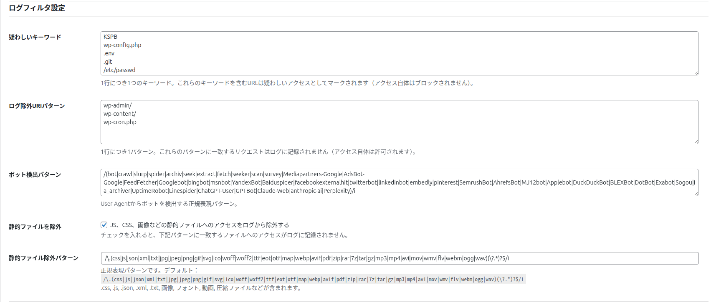
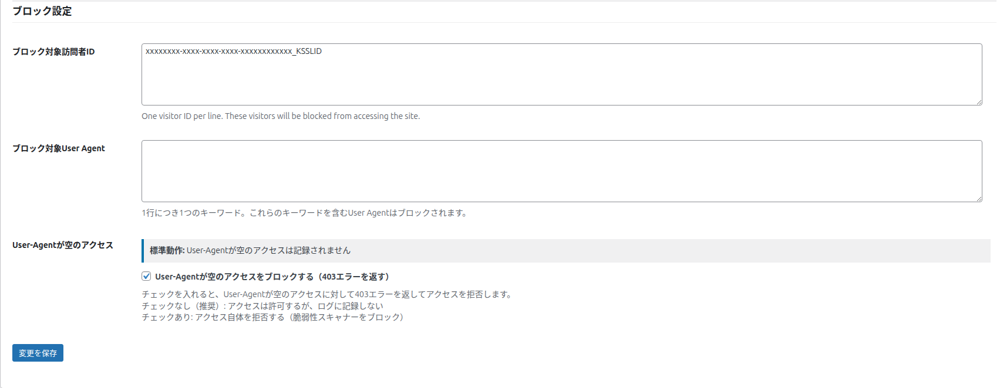

設定：ログフィルタとブロック
「設定」タブの後半 2 つのまとまり（ログフィルタ設定・ブロック設定）の全項目を説明します。疑わしいアクセスの判定、記録から外すアクセス、アクセスの拒否をここで決めます。
保存のしかたは「設定：表示と記録」と同じです（上か下の保存ボタンで、すべての項目をまとめて保存します）。
ログフィルタ設定

疑わしいキーワード
| 項目 | 内容 |
|---|---|
| 何をするか | 攻撃の試みやスキャナーに多い文字列を登録します。ページの URL か User-Agent にこれらを含むアクセスを「疑わしいアクセス」とします。アクセス自体は拒否しません。 |
| 書き方 | 1 行に 1 つ。大文字と小文字は区別しません。 |
| 初期値（18 個） | wp-config.php / .env / .git / /etc/passwd / SELECT / UNION SELECT / <script / ../ / ../../ / %00 / %2e%2e / eval( / base64_decode / system( / exec( / shell_exec / phpinfo / proc_open |
| 使われる場所 | 絞り込みの「疑わしいアクセスを含める」、一覧の赤い印、削除とエクスポートの「疑わしいアクセスのみ」。場所ごとの基準の違いは「記録のルール」。 |
| 変更して保存すると | すでに記録したログの判定を、裏で自動的にやり直します。やり直しが終わるまでは、その場で文字を照らし合わせて絞り込むので、表示に少し時間がかかることがあります。 |
注意
ログの保存形式を移し替えている途中は、キーワードの変更は保存されず「テーブル移行中のため、疑わしいキーワードの変更は保存されませんでした。移行完了後にもう一度保存してください。」と表示されます。移し替えが終わってから保存し直してください。
おすすめ
短すぎる語（例: a）や、サイトの普通のページに含まれる語を入れると、普通のアクセスまで疑わしいアクセスとして除かれてしまいます。攻撃にしか出てこない、特徴のある文字列を入れてください。
ログ除外URIパターン
| 項目 | 内容 |
|---|---|
| 何をするか | ここに書いた文字をページの URL に含むアクセスを、記録しません。アクセス自体は許可します（ページは普通に表示されます）。 |
| 書き方 | 1 行に 1 パターン。URL の一部に一致すれば対象です（例: /healthcheck、/wp-cron.php）。大文字と小文字は区別しません。 |
| 初期値 | 空（何も除外しない） |
| すでに記録したログ | 削除はしませんが、一覧・合計・グラフには表示しなくなります。パターンを消すと、再び表示されます。 |
おすすめ
監視サービスが定期的に開く URL、社内の確認用のページ、プレビュー用の URL など、訪問者の数に入れたくないページを登録すると、数字が実態に近くなります。
ボット検出パターン
| 項目 | 内容 |
|---|---|
| 何をするか | User-Agent がこのパターンに当てはまるアクセスを「ボット」と判定します。 |
| 書き方 | 正規表現（文字のパターンを表す書き方）で書きます。初期値は /(bot|crawl|slurp|spider|…|GPTBot|ChatGPT-User|ClaudeBot|PerplexityBot|…)/i のように、名前を | で区切って並べた形です。名前を足すときは、| で区切って括弧の中に加えます。 |
| 初期値に含まれるもの | 一般的なクローラーを表す語（bot、crawl、spider など）、検索エンジン（Googlebot、bingbot、YandexBot、Baiduspider など）、SNS のプレビュー（facebookexternalhit、twitterbot など）、SEO ツール（AhrefsBot、SemrushBot、MJ12bot など）、AI のクローラー（GPTBot、ChatGPT-User、Google-Extended、ClaudeBot、PerplexityBot、CCBot、Bytespider など） |
| 空にして保存すると | 初期値のパターンを使います。 |
| 書き方が正しくないとき | 保存されず「ボット検出パターンが正規表現として正しくないため、変更は保存されませんでした。」と表示されます。前の値のままです。 |
| 効く範囲 | 保存した後に記録するアクセスだけです。すでに記録したログの「Is Bot?」は変わりません。 |
静的ファイルを除外 / 静的ファイル除外パターン
| 項目 | 内容 |
|---|---|
| 静的ファイルを除外 | 「JS、CSS、画像などの静的ファイルへのアクセスをログから除外する」。初期値はオン。オンのとき、下のパターンに一致するファイルへのアクセスを記録しません。 |
| 静的ファイル除外パターン | 除外するファイルの拡張子のパターン（正規表現）です。初期値は .css、.js、.json、.xml、.txt、画像、フォント、動画、圧縮ファイルなどを含みます（画面に初期値が表示されます）。 |
| オフにしても記録されないもの | css / js / jpg / png / gif / svg / ico / woff / woff2 / ttf / eot / map は、この設定とは別に、常に記録しません。 |
注意
パターンの書き方が正しくないと、お知らせは出ずに、その変更だけが保存されません。保存した後に画面を開き直して、変更が残っているかを確かめてください。
ブロック設定

ブロック対象訪問者ID
| 項目 | 内容 |
|---|---|
| 何をするか | ここに並んだ訪問者 ID の訪問者は、サイトを見られなくなります（「Access Restricted」の画面）。 |
| 書き方 | 1 行に 1 つ。末尾の _KSSLID まで含めた、訪問者 ID の全体を書きます（一覧の訪問者 ID にマウスを乗せると全体が表示されます）。255 文字を超える行は保存されません。 |
| 一覧の Block との関係 | 一覧で「Block」を押した訪問者 ID は、ここに自動で追加されます。ここから行を消して保存すると、ブロックを解除できます。 |
ブロック対象User Agent
| 項目 | 内容 |
|---|---|
| 何をするか | ここに書いた語を User-Agent に含むアクセスを拒否します。相手には「Access Restricted」の画面（Your access to this site has been temporarily restricted due to your User Agent. …）を返します。 |
| 書き方 | 1 行に 1 つ。User-Agent の一部に一致すれば対象です。大文字と小文字は区別しません。 |
| 初期値 | 空 |
| 効く範囲 | 公開ページ、ログイン画面、WordPress の裏の通信など。WordPress の管理画面そのものは対象外です。 |
注意
ログイン画面にも効くので、自分のブラウザの User-Agent に含まれる語（例: Mozilla、Chrome、Windows）を書くと、自分もログインできなくなるおそれがあります。ボットの名前など、特定の相手にしか含まれない語を書いてください。
User-Agentが空のアクセス
| 項目 | 内容 |
|---|---|
| 標準動作 | User-Agent が空のアクセスは、この設定に関係なく記録しません。 |
| User-Agentが空のアクセスをブロックする（403エラーを返す） | オンにすると、User-Agent が空のアクセスを拒否し、「Forbidden: User-Agent required」の画面（403）を返します。初期値はオフです。 |
| チェックなし（推奨） | アクセスは許可するが、記録しない。 |
| チェックあり | アクセス自体を拒否する（名前を名乗らないスキャナーを止めるのに役立ちます）。 |
補足
一部の監視サービスやサーバーの中の処理は、User-Agent を空で送ることがあります。オンにしてそれらが動かなくなったら、オフに戻してください。